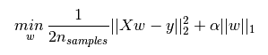
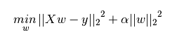

L1正则化与L2正则化
这两天看刘建平老师博客的线性回归算法库小结这章内容时，里面涉及了很多L1正则化与L2正则化的知识，之前学习这块内容时也有看到，但以前看书看到不会的都直接略过，会调用就行。可是这次准备将之前遗漏的知识点都弄懂，不想做个半吊子，于是找到了一篇关于正则化的通俗易懂的博文。先将博文内容做个小结。
我们经常能看到损失函数后面会添加一个额外项（就像高数中的皮亚若余项这样的），常用的额外项一般有两种，中文称为L1正则化和L2正则化（或L1范数和L2范数）。
L1正则化和L2正则化可以看做是损失函数的惩罚项。所谓『惩罚』是指对损失函数中的某些参数做一些限制。对于线性回归模型，使用L1正则化的模型建叫做Lasso回归，使用L2正则化的模型叫做Ridge回归（岭回归）。
下图是Python中Lasso回归的损失函数，式中加号后面一项α||w||_1。α||w||_1即为L1正则化项。

下图是Python中Ridge回归的损失函数，式中加号后面一项α||w||^2_2。α||w||^2_2即为L2正则化项。

一般回归分析中回归w表示特征的系数，从上式可以看到正则化项是对系数做了处理（限制）。L1正则化和L2正则化的说明如下：
L1正则化是指权值向量w中各个元素的绝对值之和，通常表示为||w||_1
L2正则化是指权值向量w中各个元素的平方和然后再求平方根（可以看到Ridge回归的L2正则化项有平方符号），通常表示为||w||_2
一般都会在正则化项之前添加一个系数，Python中用αα表示，一些文章也用λλ表示。这个系数需要用户指定。
那添加L1和L2正则化有什么用？下面是L1正则化和L2正则化的作用，这些表述可以在很多文章中找到。
L1正则化可以产生稀疏权值矩阵，即产生一个稀疏模型，可以用于特征选择
L2正则化可以防止模型过拟合（overfitting）；一定程度上，L1也可以防止过拟合
系数模型与特征选择
上面提到L1正则化有助于生成一个稀疏权值矩阵，进而可以用于特征选择。为什么要生成一个稀疏矩阵？
稀疏矩阵指的是很多元素为0，只有少数元素是非零值的矩阵，即得到的线性回归模型的大部分系数都是0. 通常机器学习中特征数量很多，例如文本处理时，如果将一个词组（term）作为一个特征，那么特征数量会达到上万个（bigram）。在预测或分类时，那么多特征显然难以选择，但是如果代入这些特征得到的模型是一个稀疏模型，表示只有少数特征对这个模型有贡献，绝大部分特征是没有贡献的，或者贡献微小（因为它们前面的系数是0或者是很小的值，即使去掉对模型也没有什么影响），此时我们就可以只关注系数是非零值的特征。这就是稀疏模型与特征选择的关系。
L2正则化和过拟合
拟合过程中通常都倾向于让权值尽可能小，最后构造一个所有参数都比较小的模型。因为一般认为参数值小的模型比较简单，能适应不同的数据集，也在一定程度上避免了过拟合现象。可以设想一下对于一个线性回归方程，若参数很大，那么只要数据偏移一点点，就会对结果造成很大的影响；但如果参数足够小，数据偏移得多一点也不会对结果造成什么影响，专业一点的说法是『抗扰动能力强』。
当L1的正则化系数很小时，得到的最优解会很小，可以达到和L2正则化类似的效果。